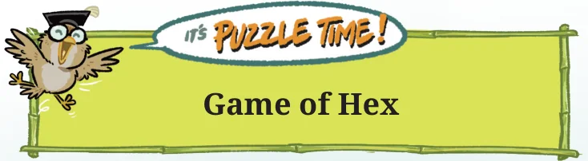
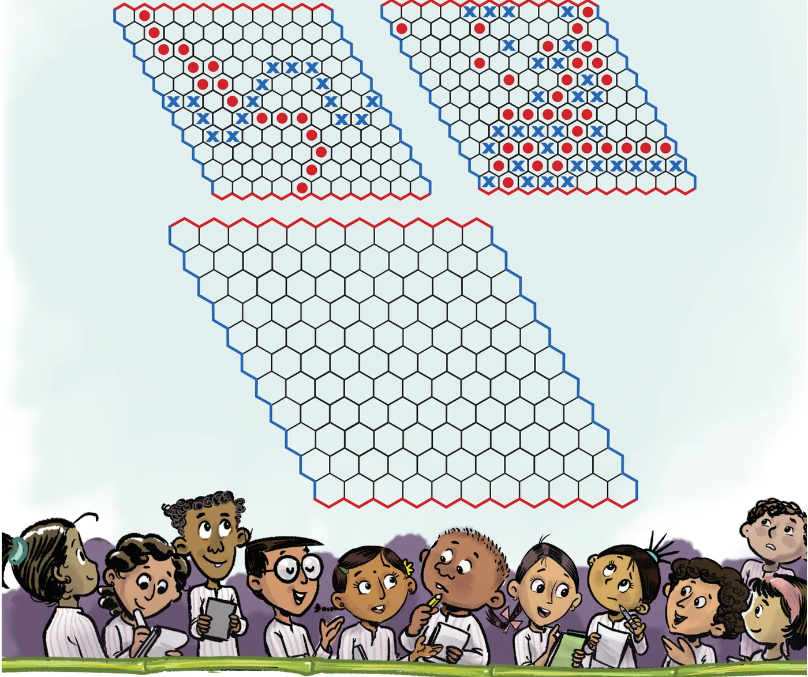

- Last year we looked at mean as a fair-share. Here, we learnt how the sum of the distances of the values to its left and right are the same.
- We saw that when values greater than the mean are inserted, the mean increases. When values less than the mean are inserted, the mean decreases. Similar phenomena can be observed with the median.
- Line graphs can be used to visualise change over time.
- We saw that examining data can lead to new questions and directions to probe further.

Hex is a two-player strategy game played on a rhombus-shaped board made of hexagonal cells, usually of size \(11 \times 11\). Each player is assigned a colour and two opposite sides of the board. Players take turns placing a piece of their colour on any empty cell. Once placed, pieces can not be moved or removed. The objective is to create an unbroken chain of one’s own pieces connecting the two assigned sides. The first player to complete such a connection wins the game. The pictures below show two possible gameplays where blue wins in the first and red wins in the second board. Here is an empty board. You can use pencils to play each round and erase the marks to play a fresh round.
